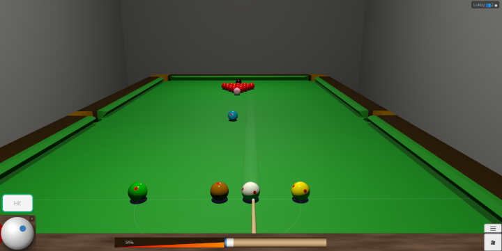

12呎標準賽桌 正式尺寸
完整重現職業賽事使用的標準尺寸。袋口、走位與長檯進攻的手感， 都最接近真正的比賽體驗。
免費 · 免安裝 · 瀏覽器直接遊玩
不用下載、不用註冊帳號，打開網頁就能上桌。標準12呎賽桌重現真實物理效果， PC與手機都能玩，還能與真人玩家即時對戰。
PC · 手機支援 滑鼠 · 觸控操作 線上真人對戰

線上斯諾克
想認真練球，或只想隨手來一局，都有合適的桌子。點一下就直接開球， 不需要任何設定。
完整重現職業賽事使用的標準尺寸。袋口、走位與長檯進攻的手感， 都最接近真正的比賽體驗。
桌子更小、節奏更快，隨時隨地都能快速來一局， 在手機上玩起來特別方便。
線上對戰
線上斯諾克的真正樂趣在於對局。進入大廳就能看到目前線上的玩家， 挑好對手的瞬間，比賽立刻開始。
特色
不用多解釋，出桿就知道——球的走位和真的一樣。
桿法旋轉、走位角度到顆星反彈，忠實還原真實斯諾克的手感。
PC 用滑鼠、手機用觸控，瞄準出桿同樣順手。 無需安裝任何應用程式。
12呎、6呎與線上對戰全部免費開放，也不需要建立帳號。
自2018年起持續在GitHub上公開開發的WebGL撞球遊戲。
近年華語圈的斯諾克熱度不斷升高——從吳宜澤到趙心童， 越來越多中國球員站上世界舞台，也讓更多人想親自下場感受這項運動的魅力。 心動不如行動，現在就開一局。
免安裝、免註冊、免付費。點一下，第一桿就是你的。